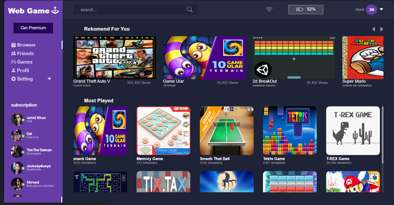
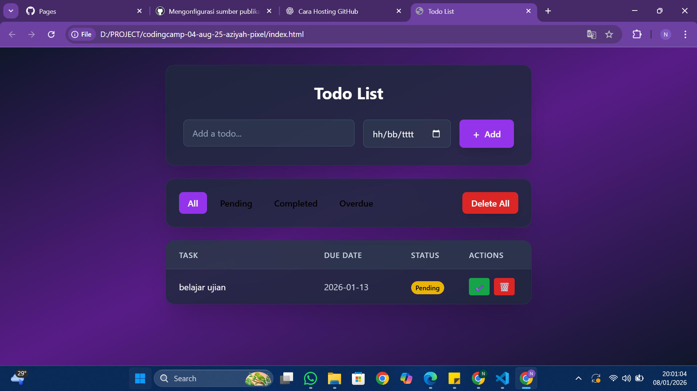
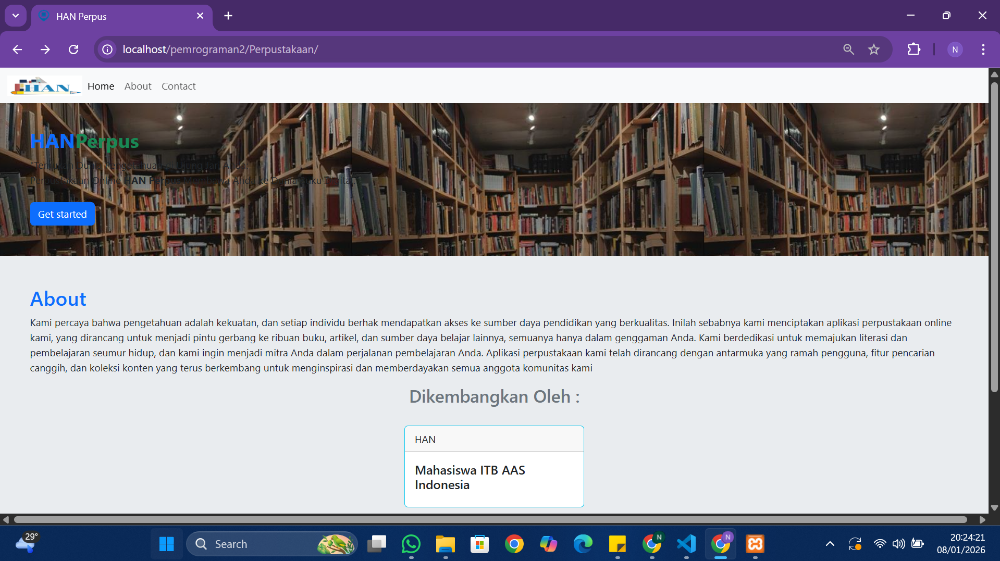
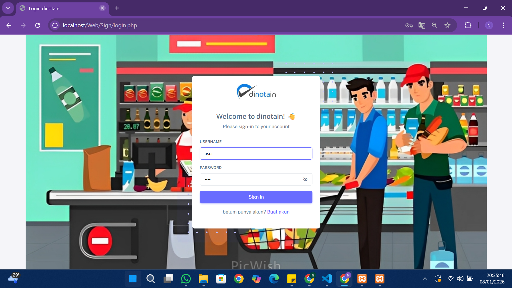

Front-End Gaming Interface Proyek ini merupakan platform gaming hub berbasis web yang dikembangkan secara kolaboratif sebagai tugas akhir semester. Dalam tim ini, saya bertanggung jawab penuh dalam mengembangkan komponen antarmuka menggunakan JavaScript dan CSS, mulai dari sistem navigasi hingga elemen interaktif pada menu Login, Profile, dan Friends List. Selain membangun fungsionalitas front-end, saya berperan penting dalam menjaga konsistensi desain (UI) di seluruh halaman guna memastikan pengalaman pengguna yang mulus, estetis, dan profesional. Website ini berhasil mengintegrasikan struktur HTML5 dengan logika JS yang responsif untuk menyimulasikan ekosistem permainan yang modern.
View
Proyek ini merupakan proyek akhir individu yang saya selesaikan setelah mengikuti pelatihan intensif selama satu minggu di RevoU. Aplikasi ini dibangun menggunakan JavaScript untuk manajemen state yang efisien dan Tailwind CSS untuk menghasilkan desain antarmuka yang modern serta responsif secara cepat. Fitur utama aplikasi ini mencakup pengelolaan tugas harian dengan implementasi LocalStorage, sehingga data pengguna tetap tersimpan dengan aman di peramban meskipun halaman dimuat ulang. Melalui proyek ini, saya berhasil menerapkan konsep component-based architecture dan fungsionalitas CRUD (Create, Read, Update, Delete) secara real-time.
View
Sistem Informasi Perpustakaan (Multi-User CRUD) Proyek ini merupakan platform manajemen perpustakaan berbasis web yang dikembangkan secara berkelompok untuk memenuhi tugas akhir mata kuliah Pemrograman Web. Dibangun menggunakan bahasa pemrograman PHP dan database MySQL, sistem ini menyediakan solusi digital untuk manajemen peminjaman buku dengan dua level hak akses, yaitu Admin dan Siswa. Dalam proyek ini, saya berkontribusi penuh sebagai Backend Developer yang bertanggung jawab membangun logika server, merancang struktur database, serta mengimplementasikan fitur autentikasi dan otorisasi. Fokus utama saya adalah memastikan fungsionalitas CRUD berjalan dengan aman dan efisien, mulai dari pendataan buku hingga pengelolaan riwayat peminjaman siswa secara real-time.
View
Selama menjalani program magang selama tiga bulan di Ichwan Media Solusi, saya berkontribusi dalam pengembangan Dinotain, sebuah aplikasi kasir berbasis web yang dirancang untuk mengoptimalkan transaksi penjualan. Dalam proyek ini, saya berperan sebagai Backend Developer yang bertanggung jawab membangun logika bisnis menggunakan bahasa pemrograman PHP dan mengelola struktur database MySQL. Saya mengimplementasikan fitur-fitur kritikal seperti manajemen inventaris barang, pengolahan data transaksi secara dinamis, serta integrasi sistem laporan keuangan. Untuk memastikan antarmuka yang fungsional namun tetap responsif, saya juga bekerja dengan Bootstrap guna menyelaraskan alur logika backend dengan tampilan pengguna yang efisien bagi operator kasir.
View